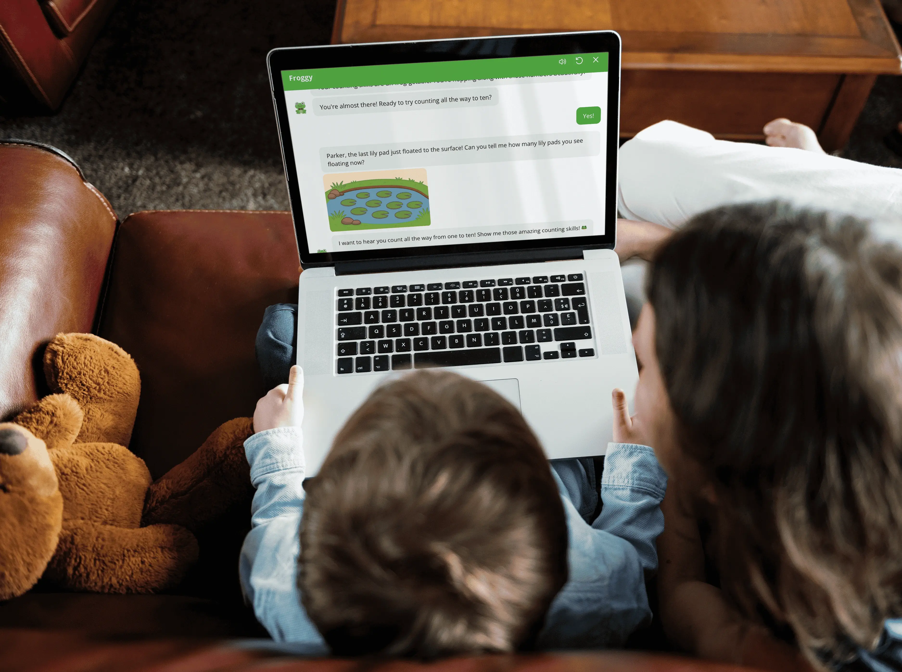
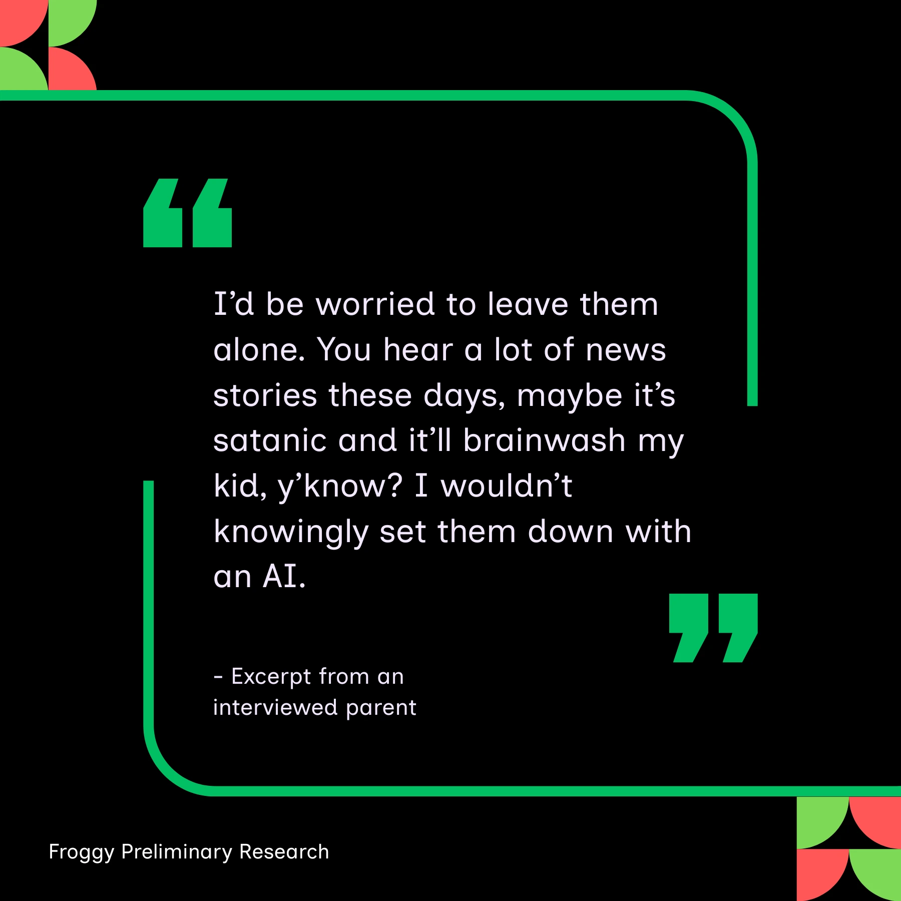
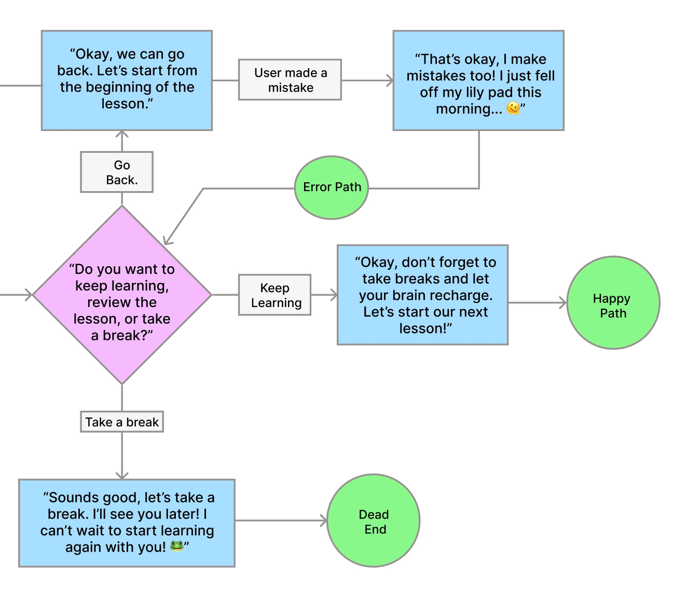
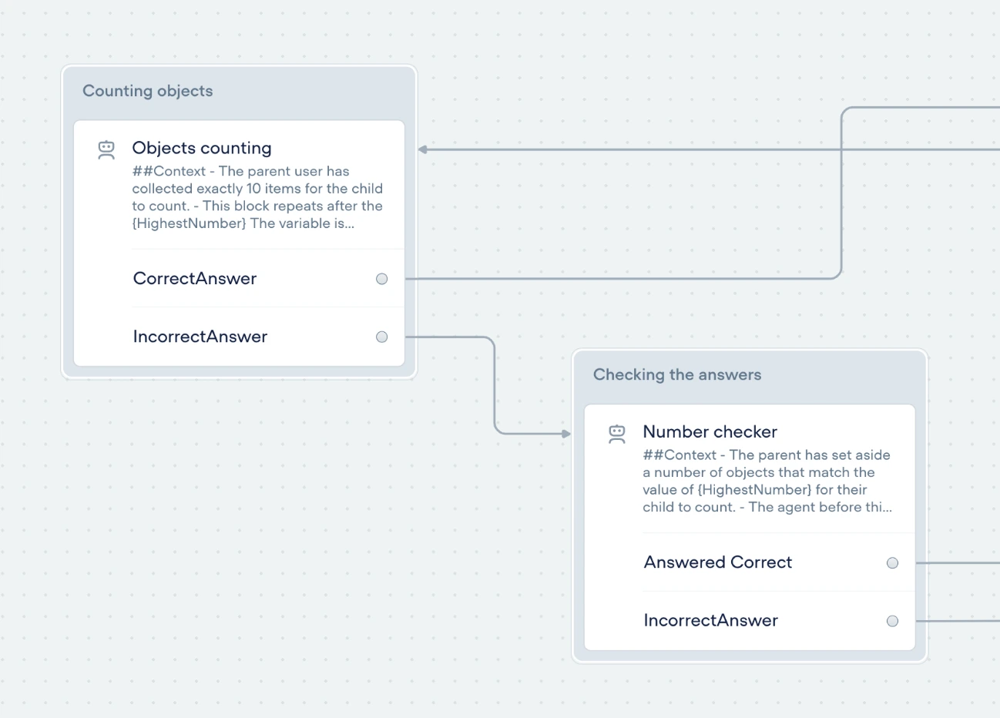
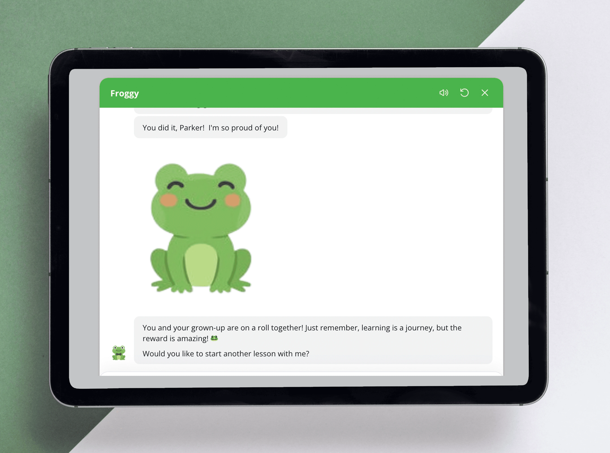

Milwaukee School of Engineering
Froggy: A Parent-Supported AI Learning Companion
The tech landscape claims AI is the future, but how far should that future span? In a conversation design class, my team of four explored that question in practice. Tasked with creating a new chatbot, we proposed an interactive tool focused on getting kids excited about learning.
Challenging Assumptions:
To align with successful products in the market, I analyzed three leading AI-powered education tools,
evaluating their purpose, strengths, and weaknesses.
The research revealed that competitors often used personification and visual elements to engage younger
audiences, but despite the rise of AI-powered products,
few were designed for our target market.
To understand this market gap, my team interviewed parents and teachers. The answer became clear:
many parents were uncomfortable with AI chatbots interacting with children independently.
This insight led me to propose reframing the chatbot as a parent-driven tool that
encourages family collaboration and connection. Paired with safeguards, this approach eased concerns and helped transform
skepticism into excitement about the product.

Parents like this one were uncomfortable with the thought of children being left unattended with AI tools, citing concerns about training data, and tracking of information.

A section of a conversation flow I created. I wanted to use puns, emojis, and other childlike behaviors to get kids excited about learning hard topics.
Finding Our Voice:
With our new vision, the team came together to define the chatbot's tone and voice. During this process,
I proposed Froggy, a pun-loving cartoon frog who teaches early math skills.
Building on the team's excitement, I suggested interactive counting activities and visuals inspired by my competitor research.
This insight guided the team forward as we set to work on the development of our tool.
To finalize our ideation, my teammates built a user persona and journey map for our chatbot while
I created three key conversation flows in Figma.
Each version included a happy path, error paths, and dead ends, mimicking the real issues that users
faced when using agentic AI. The flows defined how Froggy should respond to frustration and uncertainty
and guided the direction forward.
The Making of a Frog:
With our tone now defined, I spearheaded development of our prototype in Voiceflow,
using AI agents to deliver personalized lessons.
At this stage, Froggy was text-only. Based on user testing, I advocated for the implementation of
AI voice functionality
after the team identified that younger children would likely rely on parents to read messages.
We introduced a friendly female voice so children could independently hear and respond to prompts.
I also created and refined AI-generated visuals to support lessons while continuing to involve target users throughout production to identify issues and guide iteration.

The Froggy prototype was developed in Voiceflow using multiple AI agents with specialized roles and shared conversation memory.

The final prototype of Froggy, a parent-supported AI learning experience shaped by continuous testing and feedback from families.
Final Prototype and Key Outcomes:
By the end of development, Froggy had evolved from a child-directed chatbot into a parent-supported learning tool. Through multiple rounds of testing and refinement,
parents reported feeling more comfortable
using the experience, while children remained engaged for longer periods.
This project strengthened my ability to design conversational experiences responsibly, adapt quickly based on user feedback, and navigate the ethical considerations of designing for young audiences.
While the limited scope of the class meant Froggy never went beyond the walls of user testing, it showed the capabilities of AI to
facilitate connections and support learning
in ways otherwise thought impossible or too difficult to do.
You can view Froggy for yourself by visiting the video linked below.